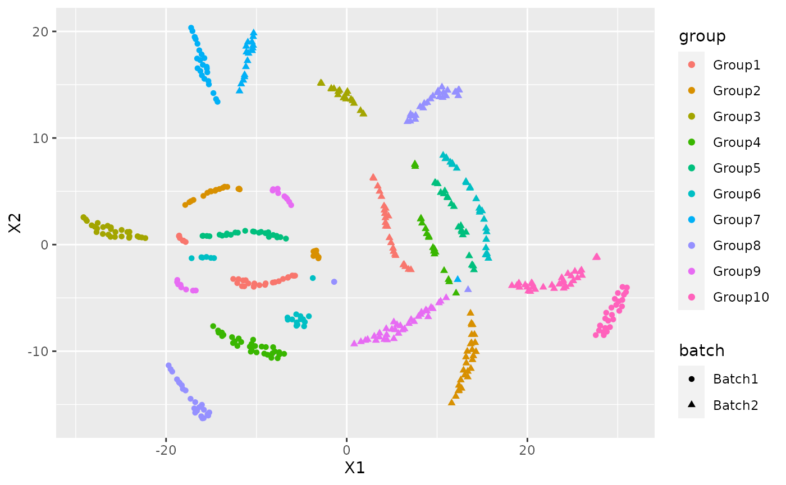
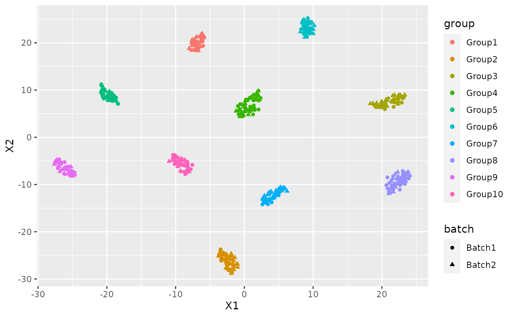

vignettes/vignette.Rmd
vignette.RmdFirst of all we need to install NewWave:
if(!requireNamespace("BiocManager", quietly = TRUE))
install.packages("BiocManager")
BiocManager::install("NewWave")NewWave is a new package that assumes a Negative Binomial distributions for dimensionality reduction and batch effect removal. In order to reduce the memory consumption it uses a PSOCK cluster combined with the R package SharedObject that allow to share a matrix between different cores without memory duplication. Thanks to that we can massively parallelize the estimation process with huge benefit in terms of time consumption. We can reduce even more the time consumption using some minibatch approaches on the different steps of the optimization.
I am going to show how to use NewWave with example data generated with Splatter.
params <- newSplatParams()
N=500
set.seed(1234)
data <- splatSimulateGroups(params,batchCells=c(N/2,N/2),
group.prob = rep(0.1,10),
de.prob = 0.2,
verbose = FALSE) Now we have a dataset with 500 cells and 10000 genes, I will use only the 500 most variable genes. NewWave takes as input raw data, not normalized.
set.seed(12359)
hvg <- rowVars(counts(data))
names(hvg) <- rownames(counts(data))
data <- data[names(sort(hvg,decreasing=TRUE))[1:500],]As you can see there is a variable called batch in the colData section.
colData(data)
#> DataFrame with 500 rows and 4 columns
#> Cell Batch Group ExpLibSize
#> <character> <character> <factor> <numeric>
#> Cell1 Cell1 Batch1 Group6 54405.5
#> Cell2 Cell2 Batch1 Group10 65015.6
#> Cell3 Cell3 Batch1 Group7 46966.5
#> Cell4 Cell4 Batch1 Group8 62861.7
#> Cell5 Cell5 Batch1 Group3 62433.4
#> ... ... ... ... ...
#> Cell496 Cell496 Batch2 Group10 83716.0
#> Cell497 Cell497 Batch2 Group10 64639.5
#> Cell498 Cell498 Batch2 Group2 47283.1
#> Cell499 Cell499 Batch2 Group7 51248.2
#> Cell500 Cell500 Batch2 Group3 54452.3IMPORTANT: For batch effecr removal the batch variable must be a factor
data$Batch <- as.factor(data$Batch)We also have a variable called Group that represent the cell type labels.
We can see the how the cells are distributed between group and batch
pca <- prcomp_irlba(t(counts(data)),n=10)
plot_data <-data.frame(Rtsne(pca$x)$Y)
plot_data$batch <- data$Batch
plot_data$group <- data$Group
ggplot(plot_data, aes(x=X1,y=X2,col=group, shape=batch))+ geom_point()
There is a clear batch effect between the cells.
Let’s try to correct it.
I am going to show different implementation and the suggested way to use them with the given hardware.
Some advise:
This is the way to insert the batch variable, in the same manner can be inserted other cell-related variable and if you need some gene related variable those can be inserted in V.
res <- newWave(data,X = "~Batch", K=10, verbose = TRUE)
#> Time of setup
#> user system elapsed
#> 0.011 0.000 0.257
#> Time of initialization
#> user system elapsed
#> 0.030 0.004 0.490
#> Iteration 1
#> penalized log-likelihood = -1296831.91621212
#> Time of dispersion optimization
#> user system elapsed
#> 0.679 0.052 0.647
#> after optimize dispersion = -1057745.67672738
#> Time of right optimization
#> user system elapsed
#> 0.000 0.000 6.191
#> after right optimization= -1057024.07833179
#> after orthogonalization = -1057024.05501048
#> Time of left optimization
#> user system elapsed
#> 0.031 0.045 6.075
#> after left optimization= -1056755.51081916
#> after orthogonalization = -1056755.50871805
#> Iteration 2
#> penalized log-likelihood = -1056755.50871805
#> Time of dispersion optimization
#> user system elapsed
#> 0.763 0.067 0.701
#> after optimize dispersion = -1056749.891008
#> Time of right optimization
#> user system elapsed
#> 0.001 0.000 5.314
#> after right optimization= -1056722.11257822
#> after orthogonalization = -1056722.11124581
#> Time of left optimization
#> user system elapsed
#> 0.040 0.045 4.569
#> after left optimization= -1056712.02255836
#> after orthogonalization = -1056712.02250333In order to make it faster you can increase the number of cores using “children” parameter:
res2 <- newWave(data,X = "~Batch", K=10, verbose = TRUE, children=2)
#> Time of setup
#> user system elapsed
#> 0.010 0.000 3.273
#> Time of initialization
#> user system elapsed
#> 0.031 0.004 0.413
#> Iteration 1
#> penalized log-likelihood = -1296831.91621601
#> Time of dispersion optimization
#> user system elapsed
#> 0.690 0.028 0.636
#> after optimize dispersion = -1057745.67587822
#> Time of right optimization
#> user system elapsed
#> 0.001 0.000 3.164
#> after right optimization= -1057024.06868609
#> after orthogonalization = -1057024.04535576
#> Time of left optimization
#> user system elapsed
#> 0.030 0.013 2.907
#> after left optimization= -1056755.50575859
#> after orthogonalization = -1056755.50366
#> Iteration 2
#> penalized log-likelihood = -1056755.50366
#> Time of dispersion optimization
#> user system elapsed
#> 0.721 0.080 0.672
#> after optimize dispersion = -1056749.88553503
#> Time of right optimization
#> user system elapsed
#> 0.002 0.000 2.723
#> after right optimization= -1056722.13659856
#> after orthogonalization = -1056722.13525283
#> Time of left optimization
#> user system elapsed
#> 0.020 0.025 2.261
#> after left optimization= -1056712.04955364
#> after orthogonalization = -1056712.04948209If you do not have an high number of cores to run newWave this is the fastest way to run. The optimization process is done by three process itereated until convercence.
Each of these three steps can be accelerated using mini batch, the number of observation is settled with these parameters:
res3 <- newWave(data,X = "~Batch", verbose = TRUE,K=10, children=2,
n_gene_disp = 100, n_gene_par = 100, n_cell_par = 100)
#> Time of setup
#> user system elapsed
#> 0.009 0.000 0.260
#> Time of initialization
#> user system elapsed
#> 0.034 0.000 0.345
#> Iteration 1
#> penalized log-likelihood = -1296831.9162208
#> Time of dispersion optimization
#> user system elapsed
#> 0.660 0.036 0.612
#> after optimize dispersion = -1057745.67829633
#> Time of right optimization
#> user system elapsed
#> 0.001 0.001 3.063
#> after right optimization= -1057024.12474379
#> after orthogonalization = -1057024.10142245
#> Time of left optimization
#> user system elapsed
#> 0.028 0.018 2.933
#> after left optimization= -1056755.49557259
#> after orthogonalization = -1056755.49345736
#> Iteration 2
#> penalized log-likelihood = -1056755.49345736
#> Time of dispersion optimization
#> user system elapsed
#> 0.280 0.060 0.211
#> after optimize dispersion = -1056750.40884817
#> Time of right optimization
#> user system elapsed
#> 0.001 0.000 0.575
#> after right optimization= -1056745.94533161
#> after orthogonalization = -1056745.94506275
#> Time of left optimization
#> user system elapsed
#> 0.020 0.036 0.331
#> after left optimization= -1056745.74959485
#> after orthogonalization = -1056745.74956973If you have a lot of core disposable or you want to estimate a genewise dispersion parameter this is the fastes configuration:
res3 <- newWave(data,X = "~Batch", verbose = TRUE,K=10, children=2,
n_gene_par = 100, n_cell_par = 100, commondispersion = FALSE)
#> Time of setup
#> user system elapsed
#> 0.006 0.004 0.261
#> Time of initialization
#> user system elapsed
#> 0.040 0.000 0.409
#> Iteration 1
#> penalized log-likelihood = -1296831.9161048
#> Time of dispersion optimization
#> user system elapsed
#> 0.622 0.056 0.593
#> after optimize dispersion = -1057745.67570347
#> Time of right optimization
#> user system elapsed
#> 0.002 0.000 2.986
#> after right optimization= -1057024.07648382
#> after orthogonalization = -1057024.05316422
#> Time of left optimization
#> user system elapsed
#> 0.018 0.024 2.924
#> after left optimization= -1056755.4930995
#> after orthogonalization = -1056755.49099402
#> Iteration 2
#> penalized log-likelihood = -1056755.49099402
#> Time of dispersion optimization
#> user system elapsed
#> 0.088 0.049 0.545
#> after optimize dispersion = -1052862.00530605
#> Time of right optimization
#> user system elapsed
#> 0.000 0.001 0.550
#> after right optimization= -1052857.60430509
#> after orthogonalization = -1052857.60377622
#> Time of left optimization
#> user system elapsed
#> 0.028 0.018 0.610
#> after left optimization= -1052826.24612377
#> after orthogonalization = -1052826.24525463
#> Iteration 3
#> penalized log-likelihood = -1052826.24525463
#> Time of dispersion optimization
#> user system elapsed
#> 0.092 0.046 0.264
#> after optimize dispersion = -1052826.26214855
#> Time of right optimization
#> user system elapsed
#> 0.002 0.000 0.539
#> after right optimization= -1052821.76592427
#> after orthogonalization = -1052821.76498151
#> Time of left optimization
#> user system elapsed
#> 0.029 0.014 0.589
#> after left optimization= -1052793.47966384
#> after orthogonalization = -1052793.47904362NB: do not use n_gene_disp in this case, it will slower the computation.
Now I can use the latent dimension rapresentation for visualization purpose:
latent <- reducedDim(res)
tsne_latent <- data.frame(Rtsne(latent)$Y)
tsne_latent$batch <- data$Batch
tsne_latent$group <- data$Group
ggplot(tsne_latent, aes(x=X1,y=X2,col=group, shape=batch))+ geom_point()
or for clustering:
cluster <- kmeans(latent, 10)
adjustedRandIndex(cluster$cluster, data$Group)
#> [1] 0.7012788
sessionInfo()
#> R Under development (unstable) (2021-02-05 r79941)
#> Platform: x86_64-pc-linux-gnu (64-bit)
#> Running under: Ubuntu 20.04.2 LTS
#>
#> Matrix products: default
#> BLAS/LAPACK: /usr/lib/x86_64-linux-gnu/openblas-pthread/libopenblasp-r0.3.8.so
#>
#> locale:
#> [1] LC_CTYPE=en_US.UTF-8 LC_NUMERIC=C
#> [3] LC_TIME=en_US.UTF-8 LC_COLLATE=en_US.UTF-8
#> [5] LC_MONETARY=en_US.UTF-8 LC_MESSAGES=C
#> [7] LC_PAPER=en_US.UTF-8 LC_NAME=C
#> [9] LC_ADDRESS=C LC_TELEPHONE=C
#> [11] LC_MEASUREMENT=en_US.UTF-8 LC_IDENTIFICATION=C
#>
#> attached base packages:
#> [1] parallel stats4 stats graphics grDevices utils datasets
#> [8] methods base
#>
#> other attached packages:
#> [1] NewWave_1.1.1 mclust_5.4.7
#> [3] ggplot2_3.3.3 Rtsne_0.15
#> [5] irlba_2.3.3 Matrix_1.3-2
#> [7] splatter_1.15.1 SingleCellExperiment_1.13.10
#> [9] SummarizedExperiment_1.21.1 Biobase_2.51.0
#> [11] GenomicRanges_1.43.3 GenomeInfoDb_1.27.6
#> [13] IRanges_2.25.6 S4Vectors_0.29.7
#> [15] BiocGenerics_0.37.1 MatrixGenerics_1.3.1
#> [17] matrixStats_0.58.0
#>
#> loaded via a namespace (and not attached):
#> [1] rsvd_1.0.3 Rcpp_1.0.6 locfit_1.5-9.4
#> [4] lattice_0.20-41 assertthat_0.2.1 rprojroot_2.0.2
#> [7] digest_0.6.27 R6_2.5.0 backports_1.2.1
#> [10] evaluate_0.14 highr_0.8 pillar_1.4.7
#> [13] zlibbioc_1.37.0 rlang_0.4.10 checkmate_2.0.0
#> [16] rmarkdown_2.6 pkgdown_1.6.1.9000 labeling_0.4.2
#> [19] textshaping_0.3.0 desc_1.2.0 BiocParallel_1.25.4
#> [22] stringr_1.4.0 SharedObject_1.5.5 beachmat_2.7.6
#> [25] RCurl_1.98-1.2 munsell_0.5.0 DelayedArray_0.17.7
#> [28] BiocSingular_1.7.2 compiler_4.1.0 xfun_0.21
#> [31] pkgconfig_2.0.3 systemfonts_1.0.1 htmltools_0.5.1.1
#> [34] tibble_3.0.6 GenomeInfoDbData_1.2.4 crayon_1.4.1
#> [37] withr_2.4.1 bitops_1.0-6 grid_4.1.0
#> [40] gtable_0.3.0 lifecycle_0.2.0 magrittr_2.0.1
#> [43] scales_1.1.1 ScaledMatrix_0.99.2 stringi_1.5.3
#> [46] cachem_1.0.3 farver_2.0.3 XVector_0.31.1
#> [49] fs_1.5.0 ellipsis_0.3.1 ragg_0.4.1
#> [52] vctrs_0.3.6 tools_4.1.0 glue_1.4.2
#> [55] fastmap_1.1.0 yaml_2.2.1 colorspace_2.0-0
#> [58] memoise_2.0.0 knitr_1.31